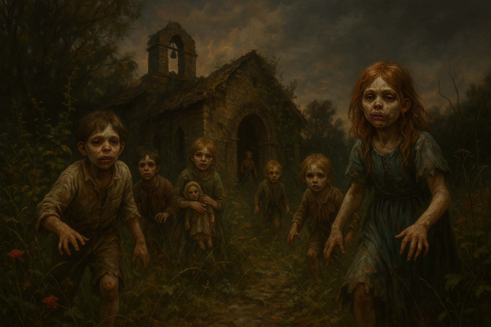

Ciimba Children
Abilities
- Pack tactics
- Disease-carrying bite
- Silent movement
Weaknesses
- Vulnerable to fire
- Child-sized (low SIZ)
Description
Child-sized revenants with their mouths sewn shut. They move in packs, quick and silent, swarming targets in coordinated attacks. The ciimba are the “successes” of Dr. Carreau’s surgical experiments — children whose bodies were “tuned” through the insertion of steel rods and occult procedures. Those whose bodies survived the process were transformed into these undead servitors, deployed by Savarin’s Lyon cell.
The name is also rendered “Ciimbri” in some source documents.
Behaviour
Ciimba hunt in packs, emerging from darkness to swarm their prey. Their bites carry disease — at least one investigator fell sick after being bitten. They are effective ambush predators, using their small size and silent movement to close distance before victims can react.
Statistics (CoC 7e)
[!info] Keeper Only No detailed stat block was provided during play. Derive stats from the source scenario prep or use Chaosium’s generic zombie/revenant stat blocks as a baseline, adjusted downward for child-sized creatures (lower STR, lower SIZ, higher DEX). Their bite should carry a disease risk — use a CON roll to resist infection after being bitten.
Campaign Encounters
Road Ambush — Puyrault Estate (Chapter 2)
The party was ambushed by ciimba on the road approaching Puyrault’s estate. Augustus was bitten during the attack and fell sick afterward. The party killed the creatures and burned the remains in a bonfire in the back garden of the estate.
Silkweavers’ Guild Tunnels (Chapter 2)
During the Silkweavers_Guild_Assault, ciimba charged from the darkness in the cellar beneath the Guild. Emma fled screaming — this was her second encounter with the creatures, and the experience crystallised into a permanent phobia of children. Charlotte was bitten. Marina was chewed on.
Charlotte’s ciimba bite status (whether she contracted the disease) is unconfirmed.
Third Encounter
A third encounter with ciimba is referenced but specific details are not recorded.
Relationships
- Created by Doctor Emile Carreau — Created through Carreau's surgical experiments — children 'tuned' via steel rod insertion and occult procedures
- Serves Mathilde Savarin — Used as cult servitors by Savarin's Lyon cell
- Related to Chakota — The 'successes' of Carreau's experiments become ciimba; the failures are rendered into nutrient substrate to feed the Chakota